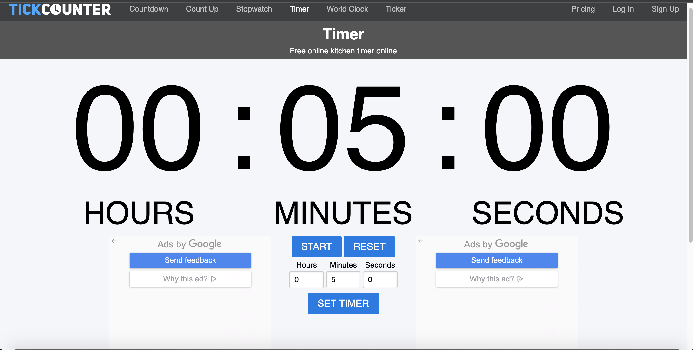

The first assignment of this week is to peer review. Look at other people's scientific models and give a hot and cold comment to EACH model. If you do not know a hot and cold comment is, a hot comment is something you liked, while a cold comment is an improvement you would like to see.
You have 5 minutes to distribute these comments.
After distibuting your comments, read the comments you were given. Then revise your model to accomodate the comments that were given and share them with me at:
maricar.bagorio@nowacademy.orgWell that is your homework. For your classwork, you are tasked to read an article about modeling in science and reflect upon it. Write on Google Doc and share it with me.
"In a short paragraph, summarize your understanding of the article... Also, please answer why you think revising models is important?"
Here is the article:
Aspects of Modeling Article